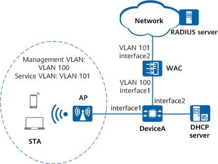

Example for Configuring a WPA3-802.1X Security Policy
Networking Requirements
Without a proper security policy deployed, a WLAN may be exposed to security risks due to its openness. To meet the enterprise's high security requirements, a WPA3 security policy, 802.1X authentication, and secure AES encryption need to be configured, and the RADIUS server authenticates identities of STAs. The WAC must be configured to work in EAP relay mode, so the WAC can support various 802.1X authentication protocols.
WPA3-802.1X authentication has no special requirements for networking. Before configuring this security policy, ensure that the network is connected and APs can go online. For details about the basic networking example, see Configuration Examples for WLAN STA Management.

In this example, interface1 and interface2 represent 10GE0/0/1 and 10GE0/0/2, respectively.

To complete the configuration, you need the following data:
- Name of the RADIUS server template: radius1; server address: 10.23.200.1; authentication port number: 1812; accounting port number: 1813; shared key: YsHsjx_202206; authentication scheme: RADIUS; accounting scheme: RADIUS
- 802.1X access profile name: wlan-dot1x; authentication mode: EAP
- AP group name: ap-group1
- SSID profile name: wlan-ssid; SSID name: wlan-net
- Security profile name: wlan-security; security policy: WPA3-802.1X
- VAP profile name: wlan-vap; service VLAN: VLAN 101
Configuration Roadmap
- Configure RADIUS authentication parameters and bind them to an authentication domain.
- Configure an 802.1X access profile to manage 802.1X access control parameters.
- Configure an authentication profile and bind it to an 802.1X access profile and the authentication domain.
- Configure STA access services so that STAs can access the WLAN properly.
- Configure a WPA3 security policy using 802.1X authentication and AES-GCM encryption in a security profile.
Precautions
- No ACK mechanism is available for multicast packet transmission over unstable wireless links of air interfaces. For this reason, multicast packets are usually sent at low rates to ensure stable transmission. However, if a large number of multicast packets are sent from the network side, air interfaces may be congested. Therefore, you are advised to configure multicast packet suppression to reduce the impact of numerous low-rate multicast packets on the wireless network. Exercise caution when configuring the rate limit if there are multicast services on the network, as this may affect the multicast services.
- In direct forwarding mode, you are advised to configure multicast packet suppression on the interfaces of a switch connected to APs.
The port isolation configuration is recommended on the ports of the device directly connected to APs. If port isolation is not configured and direct forwarding is used, a large number of unnecessary broadcast packets may be generated in the VLAN, blocking the network and degrading user experience.
Procedure
- Configure RADIUS authentication parameters.
Ensure that the RADIUS server address, port number, and shared key are correctly configured and are the same as those on the RADIUS server.
# Create a RADIUS server template.
[WAC] radius-server template radius1 [WAC-radius-radius1] radius-server authentication 10.23.200.1 1812 [WAC-radius-radius1] radius-server accounting 10.23.200.1 1813 [WAC-radius-radius1] radius-server shared-key cipher YsHsjx_202206 [WAC-radius-radius1] quit
# Configure an authentication scheme that uses RADIUS authentication.[WAC] aaa [WAC-aaa] authentication-scheme scheme1 [WAC-aaa-authen-scheme1] authentication-mode radius [WAC-aaa-authen-scheme1] quit
# Configure an accounting scheme that uses RADIUS accounting.
[WAC-aaa] accounting-scheme scheme2 [WAC-aaa-accounting-scheme2] accounting-mode radius [WAC-aaa-accounting-scheme2] accounting realtime 15 [WAC-aaa-accounting-scheme2] quit
# Create the authentication domain example.com and bind an authentication scheme, an accounting scheme, and a RADIUS server template to the authentication domain.
[WAC-aaa] domain example.com [WAC-aaa-domain-example.com] authentication-scheme scheme1 [WAC-aaa-domain-example.com] accounting-scheme scheme2 [WAC-aaa-domain-example.com] radius-server radius1 [WAC-aaa-domain-example.com] quit [WAC-aaa] quit
- Configure a route from the WAC to the server (assume that the IP address of the upstream device connected to the WAC is 10.23.101.2).
[DeviceA] ip route-static 10.23.200.0 255.255.255.0 10.23.101.2
- Configure the 802.1X access profile d1.
By default, an 802.1X access profile uses EAP authentication. Ensure that the RADIUS server supports the EAP protocol. Otherwise, the RADIUS server cannot process 802.1X authentication requests.
[WAC] dot1x-access-profile name d1 [WAC-dot1x-access-profile-d1] quit
- Configure the authentication profile p1, bind the 802.1X access profile to the authentication profile, and specify a forcible authentication domain.
[WAC] authentication-profile name p1 [WAC-authentication-profile-p1] dot1x-access-profile d1 [WAC-authentication-profile-p1] access-domain example.com force [WAC-authentication-profile-p1] quit
- Configure WLAN service parameters.
# Create the security profile wlan-security and set the security policy to WPA3-802.1X.
[WAC] wlan [WAC-wlan] security-profile name wlan-security [WAC-wlan-sec-prof-wlan-security] security wpa3 dot1x gcmp256 [WAC-wlan-sec-prof-wlan-security] quit
# Create the SSID profile wlan-ssid and set the SSID name to wlan-net.
[WAC-wlan] ssid-profile name wlan-ssid [WAC-wlan-ssid-prof-wlan-ssid] ssid wlan-net [WAC-wlan-ssid-prof-wlan-ssid] quit
# Create the VAP profile wlan-vap, set the service data forwarding mode and service VLAN, and bind the security profile and SSID profile to the VAP profile.
[WAC-wlan] vap-profile name wlan-vap [WAC-wlan-vap-prof-wlan-vap] service-vlan vlan-id 101 [WAC-wlan-vap-prof-wlan-vap] security-profile wlan-security [WAC-wlan-vap-prof-wlan-vap] authentication-profile p1 [WAC-wlan-vap-prof-wlan-vap] ssid-profile wlan-ssid [WAC-wlan-vap-prof-wlan-vap] quit
# Bind the VAP profile wlan-vap to radios 0 and 1 of APs in the AP group ap-group1.
[WAC-wlan] ap-group name ap-group1 [WAC-wlan-ap-group-ap-group1] vap-profile wlan-vap wlan 1 radio 0 [WAC-wlan-ap-group-ap-group1] vap-profile wlan-vap wlan 1 radio 1 [WAC-wlan-ap-group-ap-group1] quit
Verifying the Configuration
# Run the display security-profile command to check information about a security profile.
[WAC] display security-profile name wlan-security ------------------------------------------------------------ Security policy : WPA3 802.1x Encryption : GCMP256 PMF : mandatory ------------------------------------------------------------ WPA's configuration PTK update : disable PTK update interval(s) : 43200 Group key negotiation : enable ------------------------------------------------------------ WAPI's configuration PKI realm : - Authentication server IP : - WAI timeout(s) : 60 BK update interval(s) : 43200 BK lifetime threshold(%) : 70 USK update method : Time-based USK update interval(s) : 86400 MSK update method : Time-based MSK update interval(s) : 86400 Cert auth retrans count : 3 USK negotiate retrans count : 3 MSK negotiate retrans count : 3 ------------------------------------------------------------
# Run the display vap all command to check the VAP authentication mode based on the Auth type field.
# Connect STAs to the WLAN with the SSID wlan-net. After the correct user name and password are entered on an 802.1X client, the STA is authenticated successfully and can access the WLAN.
Configuration Scripts
- WAC
# sysname WAC # authentication-profile name p1 dot1x-access-profile d1 access-domain example.com force # dot1x-access-profile name d1 # radius-server template radius1 radius-server shared-key cipher %+%##!!!!!!!!!"!!!!"!!!!*!!!!Cd/`W03KjAwAqn64E<\TxGC_SOri<2BP\A+!!!!!2jp5!!!!!!B!!!!Oe2HMc->XMa#TLDZUaJBFJtm#XVj*E:S*|(N7`J1B:3QY!!!!!!!!!!!!!!!%+%# radius-server authentication 10.23.200.1 1812 weight 80 radius-server accounting 10.23.200.1 1813 weight 80 # aaa authentication-scheme scheme1 authentication-mode radius accounting-scheme scheme2 accounting-mode radius accounting realtime 15 domain example.com authentication-scheme scheme1 accounting-scheme scheme2 radius-server radius1 # ip route-static 10.23.200.0 255.255.255.0 10.23.101.2 # wlan security-profile name wlan-security security wpa3 dot1x gcmp256 ssid-profile name wlan-ssid ssid wlan-net vap-profile name wlan-vap service-vlan vlan-id 101 ssid-profile wlan-ssid security-profile wlan-security authentication-profile p1 ap-group name ap-group1 radio 0 vap-profile wlan-vap wlan 1 radio 1 vap-profile wlan-vap wlan 1 # return